第5章 控制与保护器件
控制与保护器件主要包括继电器、开关、接插件和保险器件等，是电子电路中经常使用的器件。
5.1 继电器
要点提示
继电器是一种常用的控制器件，它可以用较小的电流来控制较大的电流，用低电压来控制高电压，用直流电来控制交流电等，并且可实现控制电路与被控电路之间的完全隔离。
继电器包括电磁式继电器、干簧式继电器、固态继电器、步进继电器、时间继电器和温度继电器等。
继电器的文字符号为“K”。
继电器的主要参数有额定工作电压、额定工作电流、线圈电阻和触点负荷等。
电磁式继电器是最常用的继电器之一，它是利用电磁吸引力推动触点动作的。
干簧式继电器由干簧管和线圈组成，也是最常用的继电器之一。
固态继电器简称为SSR，是一种新型的电子继电器，分为直流式和交流式两大类。
继电器的主要作用是间接控制和隔离控制。
继电器是一种常用的控制器件，它可以用较小的电流来控制较大的电流，用低电压来控制高电压，用直流电来控制交流电等，并且可实现控制电路与被控电路之间的完全隔离，在自动控制、遥控、保护电路等方面得到广泛的应用。
继电器的种类很多，外形各异，如图5-1所示。
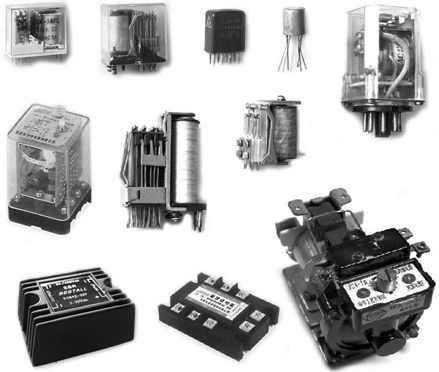
图5-1 继电器
继电器根据结构与特征可分为电磁式继电器、干簧式继电器、湿簧式继电器、压电式继电器、固态继电器、磁保持继电器、步进继电器、时间继电器、温度继电器等。
按照工作电压类型的不同，继电器可分为直流型继电器、交流型继电器和脉冲型继电器。
按照继电器触点的形式与数量，可分为单组触点继电器和多组触点继电器两类。其中单组触点继电器又分为常开触点（动合触点，简称H触点）、常闭触点（动断触点，简称D触点）、转换触点（简称Z触点）3种；多组触点继电器既可以包括多组相同形式的触点，又可以包括多种不同形式的触点。
继电器的文字符号为“K”，图形符号如图5-2所示。在电路图中，继电器的触点可以画在该继电器线圈的旁边，也可以为了便于图面布局将触点画在远离该继电器线圈的地方，而用编号表示它们是一个继电器。
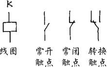
图5-2 继电器的图形符号
继电器的型号命名一般由5 个部分组成，如图5-3 所示。第一部分用字母“J”表示继电器的主称，第二部分用字母表示继电器的功率或形式，第三部分用字母表示继电器的外形特征，第四部分用1～2位数字表示序号，第五部分用字母表示继电器的封装形式。
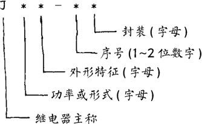
图5-3 继电器的型号
继电器型号中字母代号的含义见表 5-1。例如：型号为JZX-10M 表示这是中功率小型密封式电磁继电器，型号为JAG-2表示这是干簧式继电器。
表5-1 继电器型号中字母代号的含义
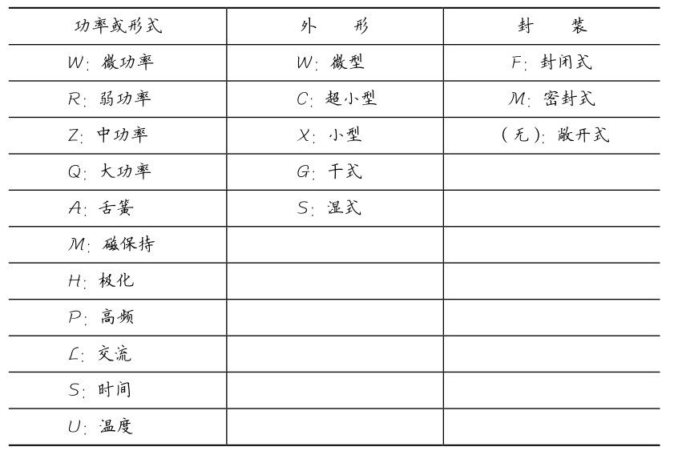
继电器的主要参数有额定工作电压、额定工作电流、线圈电阻和触点负荷等。继电器各参数可通过查看说明书或手册得知。
1．额定工作电压
额定工作电压是指继电器正常工作时线圈需要的电压值，对于直流继电器是指直流电压值，对于交流继电器则是指交流电压值。同一种型号的继电器往往有多种额定工作电压以供选择，并在型号后面加以规格号来区别。
2．额定工作电流
额定工作电流是指继电器正常工作时线圈需要的电流值，对于直流继电器是指直流电流值，对于交流继电器则是指交流电流值。选用继电器时必须保证其额定工作电压和额定工作电流符合要求。
3．线圈电阻
线圈电阻是指继电器线圈的直流电阻。对于直流继电器，线圈电阻与额定工作电压和额定工作电流的关系符合欧姆定律。
4．触点负荷
触点负荷是指继电器触点的负载能力，也称为触点容量。例如：JZX-10M 型继电器的触点负荷为直流 28V×2A 或交流115V×1A。使用中通过继电器触点的电压、电流均不应超过规定值，否则会烧坏触点，造成继电器损坏。一个继电器的多组触点的负荷一般都是一样的。
继电器的主要作用是间接控制和隔离控制。
1．间接控制
接通照明灯EL的市电电源使其点亮。图 5-4 所示为继电器用于声控电灯开关，这是弱电控制强电的典型例子。当传声器BM接收到声音信号时，该信号经放大后使继电器K吸合，其触点K −1 接通照明灯EL的市电电源使其点亮。
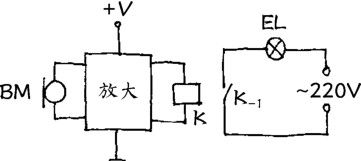
图5-4 间接控制
2．隔离控制
图 5-5 所示为继电器用于扬声器保护电路，这是隔离控制的典型例子。
功率放大器L声道或R声道的输出端如果出现直流电压，被扬声器保护电路检测放大后，使继电器 K 吸合，其触点 K −1 和K −2 （均为常闭触点）断开，切断了功放输出端与扬声器的连接，保护了扬声器免予被烧毁。采用继电器控制扬声器的通断，使保护电路与音频电路完全隔离，确保了高保真的音质。
3．保护二极管的作用
由于继电器线圈实质上是一个大电感，为避免驱动继电器的晶体管被损坏，实际使用中应在继电器线圈两端并接保护二极管，如图 5-6 所示。当开关管 VT 关断的瞬间，继电器线圈 K产生的反向高压可以通过保护二极管 VD 泄放，保护了开关管VT不会被反向高压所击穿。
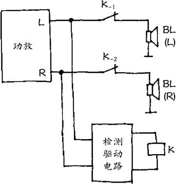
图5-5 隔离控制
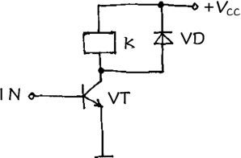
图5-6 保护二极管的作用
电磁继电器是应用最广泛的继电器之一，其结构如图 5-7所示。电磁继电器是利用电磁力实现控制和隔离的，具有控制可靠、隔离彻底、控制形式多样（接通、断开或转换）、可同时控制多组负载等特点。
电磁继电器具有两个线圈引脚和若干个触点引脚，非密封型和透明外罩继电器的引脚可直接观察识别。密封型继电器一般会将引脚示意图标示在外壳上，如图5-8所示。
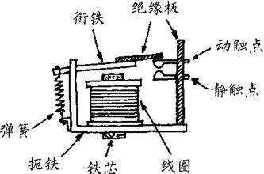
图5-7 电磁继电器结构
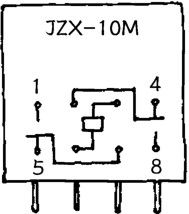
图5-8 继电器的标示
干簧继电器也是应用较多的继电器之一，它由干簧管和线圈组成，如图5-9所示。
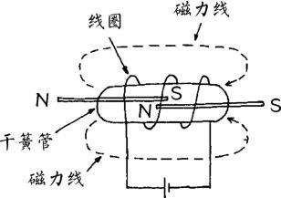
图5-9 干簧继电器结构
干簧管是将两根互不相通的铁磁性金属条密封在玻璃管内并置于线圈中。当工作电流通过线圈时，线圈产生的磁场使干簧管中的金属条被磁化，两金属条因极性相反而吸合，接通被控电路。
在线圈中可以放入若干个干簧管，它们在线圈磁场的作用下同时动作，如图5-10所示。
干簧管还可以直接由永久磁铁控制，如图5-11所示。当永久磁铁靠近时，干簧管中的金属条被磁化而吸合接通。
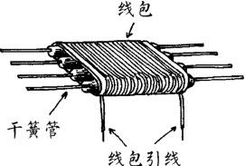
图5-10 多干簧管继电器结构
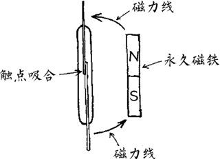
图5-11 磁铁控制干簧管
固态继电器简称为SSR，是一种新型的电子继电器，它采用光电耦合器实现控制信号的传递，同时实现控制电路与被控电路之间的隔离。固态继电器可分为直流式和交流式两大类。
1．直流固态继电器
直流固态继电器的特点是驱动电路输出端（OUT）有正、负极之分，适用于直流电路的控制。
直流固态继电器电路原理如图5-12所示。当其输入端（IN）接入控制电压时，光电耦合器中的发光二极管发光，光电耦合器中的光电三极管接收到光照而导通，实现了控制信号的隔离传递，再经放大电路放大后驱动开关管VT导通，接通被控电路。
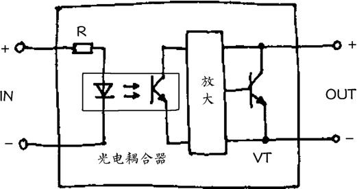
图5-12 直流固态继电器电路原理图
2．交流固态继电器
交流固态继电器的特点是驱动电路输出端（OUT）无正、负极之分，主要适用于交流电路的控制。
交流固态继电器电路原理如图5-13所示。与直流式不同的是，它的开关元件采用双向晶闸管 VS，因此可以控制交流电路的通断。
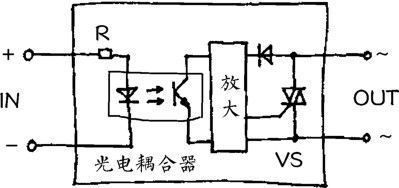
图5-13 交流固态继电器电路原理图
时间继电器是一种延时动作的继电器，主要用作延时控制。时间继电器的特点是接通或断开工作电源后，需经过一定时间的延迟其触点才动作。
时间继电器的图形符号如图5-14所示。
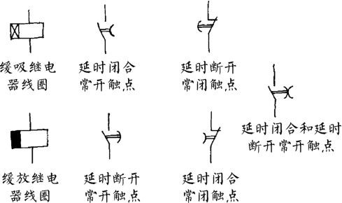
图5-14 时间继电器的图形符号
（1）根据动作特点的不同，时间继电器可分为缓吸式和缓放式两种。
缓吸式时间继电器的特点是：继电器线圈接通电源后需经一定延时各触点才动作，线圈断电时各触点瞬时复位。
缓放式时间继电器的特点是：线圈通电时各触点瞬时动作，线圈断电后各触点需经一定延时才复位。
（2）根据延时部分结构的不同，时间继电器可分为机械延时式和电子延时式两大类。
机械延时式时间继电器结构如图5-15所示，由铁芯、线圈、衔铁、空气活塞、触点等部分组成，它是利用空气活塞的阻尼作用达到延时的目的的。线圈通电时铁芯产生磁力，衔铁被吸合。衔铁向上运动后，固定在空气活塞上的推杆也开始向上运动，但由于空气活塞的阻尼作用，推杆不是瞬时而是缓慢向上运动，经过一定延时后使常开触点a-a接通、常闭触点b-b断开。
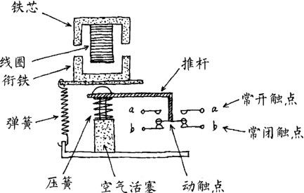
图5-15 机械延时式时间继电器结构
电子延时式时间继电器工作原理如图5-16所示，实际上是在普通电磁继电器前面增加了一个电子延时电路，当在其输入端加上工作电源后，经一定延时才使继电器K动作。电子延时式时间继电器具有较宽的延时时间调节范围，可通过改变R的阻值进行延时时间调节。
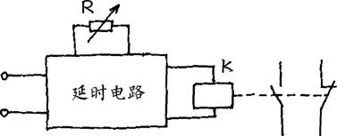
图5-16 电子延时式时间继电器原理
热继电器是一种由热量控制动作的继电器，主要应用于过载保护等场合。
热继电器的图形符号如图5-17所示。
图5-18所示为热继电器的结构，主要由加热线圈、热驱动器件、传动和定位机构、常闭触点等部分组成。
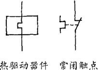
图5-17 热继电器的图形符号
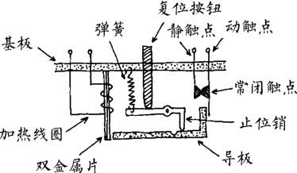
图5-18 热继电器结构
使用时热继电器的加热线圈串接在负载电路中。当负载出现过载时，加热线圈因电流过大而发热量大增，使双金属片受热向右弯曲，通过导板推动动触点右移，常闭触点断开，切断负载电路，保护了电路的安全。故障排除后，按下复位按钮使热继电器复位即可。
5.2 开关
要点提示
开关是一种应用广泛的控制器件，在各种电子电路和电子设备中起着接通、切断、转换等控制作用。
开关的一般文字符号为“S”，按钮开关的文字符号为“SB”。
开关的主要参数是额定电压和额定电流。
常用开关有拨动开关、旋转开关、按钮开关、微动开关、轻触开关和薄膜开关等。
开关是一种应用广泛的控制器件，在各种电子电路和电子设备中起着接通、切断、转换等控制作用。
开关的种类繁多，大小各异，图5-19所示为部分常见开关的外形。
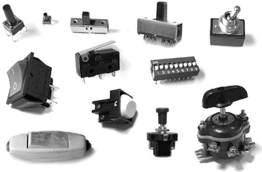
图5-19 开关
开关按结构可分为拨动开关、钮子开关、跷板开关、船形开关、推拉开关、旋转开关、按钮开关、拨码开关、微动开关和薄膜开关等，按控制极位可分为单极单位开关、单极多位开关、多极单位开关和多极多位开关等，按触点形式可分为动合开关、动断开关和转换开关。
常用开关有拨动开关、旋转开关、按钮开关、微动开关、轻触开关和薄膜开关等。
开关的一般文字符号为“S”，按钮开关的文字符号为“SB”，开关的图形符号如图5-20所示。
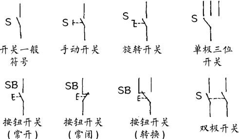
图5-20 开关的图形符号
开关的主要参数是额定电压和额定电流。
1．额定电压
额定电压是指开关长期安全运行所允许的最高工作电压，例如：100V、250V等。对于交流电源开关，额定电压通常指交流电压。
2．额定电流
额定电流是指开关在长期正常工作的前提下所能接通或切断的最大负载电流，例如：500mA、1A、5A等。
选用开关时应注意，所控制电路的工作电压和最大电流均不能超过其额定电压和额定电流。
拨动开关是指通过拨动操作的开关，如钮子开关、直拨开关和直推开关等。
1．钮子开关
图5-21所示为钮子开关结构示意图，图中位置为b端与a端接通。当将钮子状拨柄拨向左边时，b端与a端断开而与c端接通。钮子开关常用作电源开关，如图5-22所示收音机电路中的开关S。
2．直拨开关
图5-23所示为直拨开关结构示意图，图中位置为b端与a端接通。当将拨柄推向右边时，b端与a端断开而与c端接通。直拨开关往往是多极多位开关，常用作波段开关或转换开关等。图5-24所示为对讲机电路，其中的S 1 ～S 3 为收发转换开关。
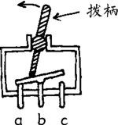
图5-21 钮子开关结构
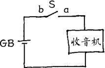
图5-22 钮子开关的应用
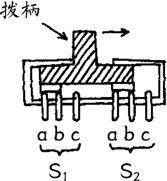
图5-23 直拨开关结构
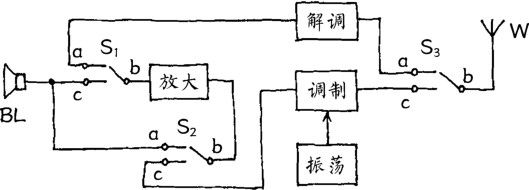
图5-24 直拨开关的应用
3．直推开关
直推开关是一种特殊的拨动开关，其拨动部分的一端有一推柄，另一端有复位弹簧，如图5-25所示。直推开关一般是多极双位开关，如图5-26所示录音机电路中的录放开关S 1 ～S 4 。平时各组开关的b端与a端接通，电路为放音状态。当按下推柄时， b端与a端断开而与c端接通，电路转换为录音状态。松开推柄后，开关在复位弹簧的作用下又恢复为放音状态。
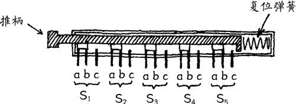
图5-25 直推开关结构
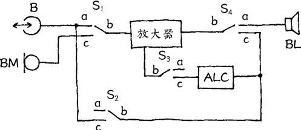
图5-26 直推开关的应用
旋转开关由转轴、接触片、动触点和静触点等组成。旋转开关可以是1层，也可以是2层、3层或更多层。每层中可以是一组开关，也可以有多组开关。
1．双层旋转开关
图5-27所示为双层旋转开关结构示意图。两层开关的接触片固定在同一个转轴上同步运动，构成双极7位开关。图5-28所示为其图形符号。
2．单层旋转开关
图5-29所示为单层3组旋转开关结构示意图。3组开关的接触片固定在一圆形绝缘物上同步转动，构成3极3位开关。图5-30所示为其图形符号。
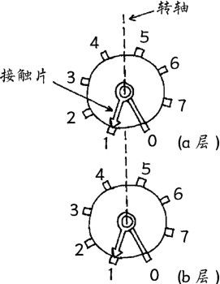
图5-27 双层旋转开关结构
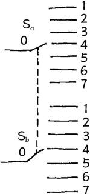
图5-28 双极7 位开关的图形符号
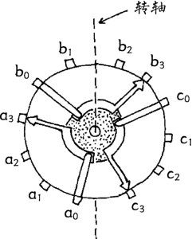
图5-29 单层3 组旋转开关结构
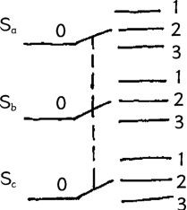
图5-30 3极3 位开关的图形符号
旋转开关常用作电路工作状态的切换，如收音机的波段开关、万用表的量程选择开关等。
按钮开关是一种不闭锁开关，按下按钮时开关从原始状态切换到动作状态，松开按钮后开关自动恢复为原始状态。
1．单断点按钮开关
图5-31所示为单断点按钮开关结构。由于动触点具有弹性，平时向上弹起，只有按钮被按下时才使触点闭合。
2．双断点按钮开关
图5-32所示为双断点按钮开关结构。由于弹簧的作用，固定在按钮上的动触点平时向上弹起，只有按钮被按下时才接通左、右静触点。
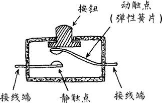
图5-31 单断点按钮开关结构
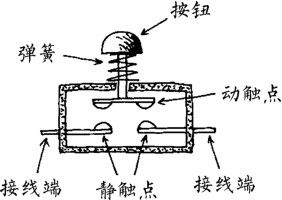
图5-32 双断点按钮开关结构
3．按钮开关的触点
按照触点形式不同，按钮开关可分为3类，如图5-33所示。
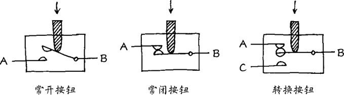
图5-33 按钮开关的触点
（1）常开按钮，平时A、B触点间不通，按下按钮时A、B触点间接通。
（2）常闭按钮，平时A、B触点间接通，按下按钮时A、B触点间切断。
（3）转换按钮，平时A与B触点接通、C与B触点断开，按下按钮时A与B触点断开而C与B触点接通。
按钮开关主要应用在门铃、家用电器和电气设备的触发控制等方面，其中双断点按钮开关可用于控制较大电流的场合。
微动开关和轻触开关也属于按钮开关，具有体积小、重量轻、手感好的特点，并可直接固定在电路板上，主要应用在计算机、电视机、录像机、收音机、DVD、音响设备、电话机、电子仪器仪表等电子产品中。
薄膜开关又称为薄膜按键开关或平面开关，是一种新型的常开按钮式的低电压、小电流的操作开关。薄膜开关由面膜层、电极电路层、隔离层等组成。
图 5-34 所示为单片型薄膜开关的电极电路层，当某一按键按下时，对应的上、下两半圆触点被接通，实现对电路的控制。
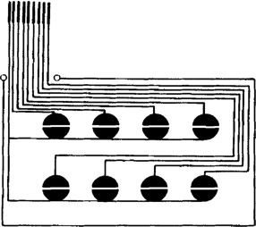
图5-34 薄膜开关
薄膜开关厚度仅有1mm左右，结构简单，外形美观，易于整体设计制造，可靠性高，寿命长，广泛应用在数字仪表、家用电器、电子玩具以及各种微电脑控制的设备中。
5.3 接插件
要点提示
接插件是实现电路器件、部件或组件之间可拆卸连接的连接器件，包括各种插头、插座与接线端子等。
接插件的一般文字符号为“X”，插头的文字符号为“XP”，插座的文字符号为“XS”。
常用接插件主要有二芯插头/插座、三芯插头/插座和同轴插头/插座等。
接插件是实现电路器件、部件或组件之间可拆卸连接的连接器件，包括各种插头、插座与接线端子等。
接插件的种类很多，大小各异。接插件按形式可分为单芯插头/插座、二芯插头/插座、三芯插头/插座、同轴插头/插座和多极插头/插座等，按用途可分为音视频插头/插座、印制电路板插座、电源插头/插座、集成电路插座、管座、接线柱、接线端子和连接器等。图5-35所示为部分接插件外形。
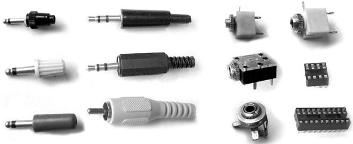
图5-35 接插件
接插件的一般文字符号为“X”，插头的文字符号为“XP”，插座的文字符号为“XS”，它们的图形符号如图5-36所示。
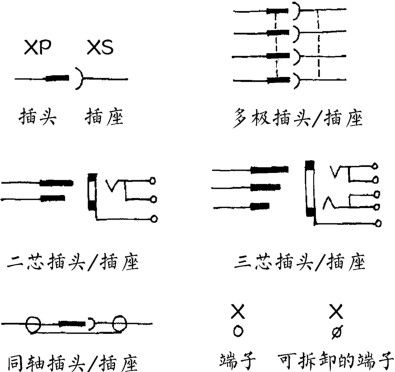
图5-36 接插件的图形符号
常用接插件主要有二芯插头/插座、三芯插头/插座和同轴插头/插座等。
1．二芯插头/插座
二芯插头/插座常用的规格有2.5mm、3.5mm、6.35mm（指插头的外直径）等，大都兼有转换开关功能，主要应用于音频信号的连接和转接。音响设备的传声器和耳机一般采用 6.35mm 的插头/插座，袖珍型收音机等通常采用2.5mm或3.5mm的插头/插座。
图5-37所示为收音机外接耳机电路。耳机插头未插入时，插座XS的a端与b端连通，扬声器BL发声。当耳机插头插入后，插座XS的a端被插头顶开脱离b端，使扬声器BL停止发声而改由耳机发声。
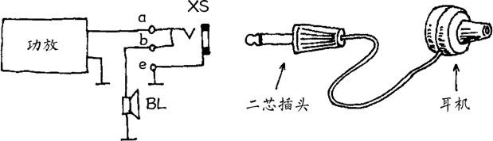
图5-37 二芯插头/插座的应用
2．三芯插头/插座
三芯插头/插座的规格和转换功能等均与二芯插头/插座一样，主要用于立体声音频信号的连接和转接。
图 5-38 所示为立体声收音机外接耳机电路。耳机插头未插入时，插座XS的a端与b端、c端与d端连通，左、右声道扬声器BL 1 、BL 2 发声。当耳机插头插入后，插座XS的a端和c端分别与b端和d端脱离，而与耳机连通，使扬声器停止发声而改由耳机发声。
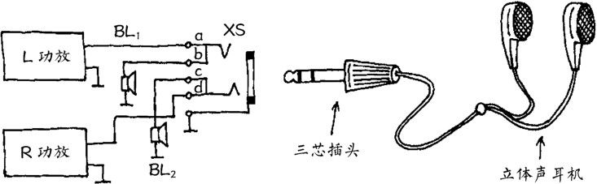
图5-38 三芯插头/插座的应用
3．同轴插头/插座
同轴插头/插座结构如图5-39所示，信号线在中心，地线在周围，并采用屏蔽线连接。同轴插头/插座主要用于电视机、录像机、调谐器、放大器、CD和DVD等音视频信号的输入、输出连接。
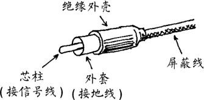
图5-39 同轴插头/插座结构
5.4 保险器件
要点提示
保险器件主要包括各种保险丝和熔断电阻。
保险丝也称为熔丝，是一种常用的一次性保护器件，主要是对电子设备或电路的短路和过载进行保护。
保险丝的文字符号为“FU”。
保险丝的主要参数是额定电压和额定电流。
热保险丝受环境温度控制而动作，是一种一次性的过热保护器件。
可恢复保险丝由正温度系数（PTC）的高分子材料制成，是一种可以重复使用的限流型保护器件。
熔断电阻又称为保险电阻，是一种兼有电阻和保险丝双重功能的特殊元件。
熔断电阻的文字符号为“RF”。
保险器件主要包括各种保险丝和熔断电阻。保险丝也称为熔丝，是一种常用的一次性保护器件，主要用来对电子设备和电路进行过载或短路保护。
保险器件包括各种保险丝和熔断器。保险丝的种类较多，外形各异，可分为普通保险丝、玻璃管保险丝、快速熔断保险丝、延迟熔断保险丝、温度保险丝和可恢复保险丝等。图 5-40 所示为部分常见保险丝。
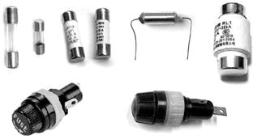
图5-40 部分常见保险丝
保险器件的文字符号为“FU”，图形符号如图5-41所示。
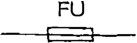
图5-41 保险器件的图形符号
以保险丝为例，保险丝的主要参数是额定电压和额定电流。
1．额定电压
额定电压是指保险丝长期正常工作所能承受的最高电压，例如：250V、500V等。
2．额定电流
额定电流是指保险丝长期正常工作所能承受的最大电流，例如：0.25A、0.5A、0.75A、1A、2A、5A、10A等。
额定电压和额定电流一般直接标示在保险丝的外壳上，如图5-42所示。
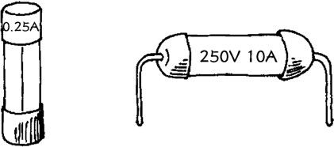
图5-42 保险丝的标示
保险器件的作用是对电子设备或电路的短路和过载进行保护。使用时保险丝应串接在被保护的电路中，并应接在电源相线输入端，如图5-43所示。
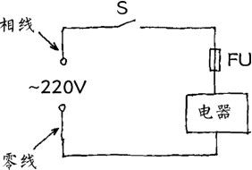
图5-43 保险器件的应用
保险丝由金属或合金材料制成，在电路或电子设备工作正常时，保险丝相当于一截导线，对电路无影响。当电路或电子设备发生短路或过载时，流过保险丝的电流剧增，超过保险丝的额定电流，致使保险丝急剧发热而熔断，切断了电源，从而达到保护电路和电子设备、防止故障扩大的目的。
保险丝的保护作用通常是一次性的，一旦熔断即失去作用，应在故障排除后更换新的相同规格的保险丝。
常用保险器件主要有玻璃管保险丝、热保险丝、可恢复保险丝和熔断电阻等。
1．玻璃管保险丝
玻璃管保险丝的结构如图5-44所示。它由保险丝、玻璃管和金属帽构成，保险丝置于玻璃管中并与两端的金属帽相连接。玻璃管保险丝的额定电流从0.1A到10A具有很多规格，尺寸也有18mm、20mm、22mm等多种可选。
玻璃管保险丝通常需要与相应的金属固定架配套使用，如图5-45 所示。金属固定架固定在电路板上并接入电路，同时也与玻璃管保险丝两端的金属帽连接，使用与更换时保险丝管可以很快地卡上或取下，透过玻璃管可以用肉眼直接观察到保险丝熔断与否，因此使用很方便。玻璃管保险丝在各种电子设备中得到普遍应用。
2．热保险丝
热保险丝受环境温度控制而动作，是一种一次性的过热保护器件，其典型结构如图5-46所示。外壳内连接两端引线的感温导电体由具有固定熔点的低熔点合金制成。正常情况下（未熔断时）热保险丝的电阻值为零。
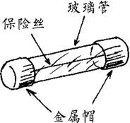
图5-44 玻璃管保险丝结构
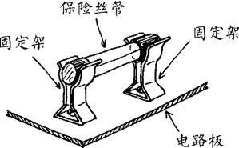
图5-45 保险丝固定架
当热保险丝所处环境温度达到其额定动作温度时，感温导电体快速熔断切断电路。热保险丝具有多种不同的额定动作温度，广泛应用在电子设备的热保护方面，例如：易发热的功率管、变压器，以及电饭煲、电磁灶、微波炉等电热类电器产品中。
3．可恢复保险丝
一般的保险丝熔断后即失去使用价值，必须更换新的。可恢复保险丝可以重复使用，它实际上是一种限流型保护器件，其外形如图5-47所示。
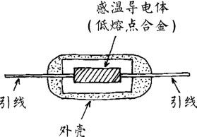
图5-46 热保险丝结构
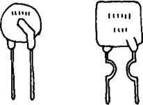
图5-47 可恢复保险丝
可恢复保险丝由正温度系数（PTC）的高分子材料制成，使用时串联在被保护电路中，如图5-48所示。
可恢复保险丝在常温下阻值极小，对电路无影响。当负载电路出现过流或短路故障时，由于通过可恢复保险丝FU的电流剧增，其迅速进入高阻状态，切断电路中的电流，保护负载不致损坏，直至故障消失，可恢复保险丝FU冷却后又自动恢复为微阻导通状态，电路恢复正常工作。图5-49所示为可恢复保险丝的阻值-温度曲线。
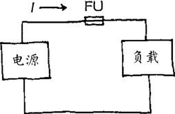
图5-48 可恢复保险丝的应用
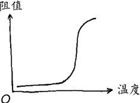
图5-49 可恢复保险丝阻值-温度曲线
4．熔断电阻
熔断电阻又称为保险电阻，是一种兼有电阻和保险丝双重功能的特殊元件。熔断电阻的文字符号为“RF”，图形符号如图 5-50所示。熔断电阻也分为一次性熔断电阻和可恢复熔断电阻两大类。
熔断电阻的阻值一般较小，其主要功能还是保险。使用熔断电阻可以只用一个元件就能同时起到限流和保险作用。
图5-51所示为大功率驱动管应用熔断电阻的例子。正常时熔断电阻RF起着限流电阻的作用，一旦负载电路过载或短路， RF即熔断，起到保护作用。
图5-50 熔断电阻的图形符号
图5-51 熔断电阻的应用
第6章 晶体二极管与单结晶体管
晶体二极管是电子电路中最重要的半导体器件，包括一般二极管和特殊二极管两大类。单结晶体管也是一种特殊的半导体二极管。
6.1 晶体二极管
要点提示
晶体二极管简称二极管，是一种常用的具有一个PN结的半导体器件。
晶体二极管的文字符号是“VD”。
晶体二极管的主要参数有最大整流电流、最大反向电压和最高工作频率。
晶体二极管的特点是具有单向导电特性。
晶体二极管的主要作用是整流、检波和开关。
晶体二极管简称二极管，是一种常用的具有一个PN结的半导体器件。
晶体二极管品种很多，大小各异，仅从外观上看，较常见的有玻璃壳二极管、塑封二极管、金属壳二极管、大功率螺栓状金属壳二极管、微型二极管、片状二极管等，如图6-1所示。
图6-1 晶体二极管
晶体二极管按制造材料的不同，可分为锗管和硅管两大类，每一类又分为N型和P型；按制造工艺不同，可分为点接触型二极管和面接触型二极管。
晶体二极管按功能与用途不同，可分为一般二极管和特殊二极管两大类。一般二极管包括检波二极管、整流二极管、开关二极管等。特殊二极管主要有稳压二极管、敏感二极管（磁敏二极管、温度效应二极管、压敏二极管等）、变容二极管、发光二极管、光电二极管、激光二极管等。没有特别说明时，晶体二极管即指一般二极管。
晶体二极管的文字符号是“VD”，图形符号如图6-2所示。
图6-2 晶体二极管的图形符号
国产晶体二极管的型号命名由5个部分组成，如图6-3所示。第一部分用数字“2”表示二极管，第二部分用字母表示材料和极性，第三部分用字母表示类型，第四部分用数字表示序号，第五部分用字母表示规格。
图6-3 晶体二极管的型号
晶体二极管型号的含义见表6-1。例如：2AP9为N型锗材料普通检波二极管，2CZ55A为N型硅材料整流二极管，2CK71B为N型硅材料开关二极管。
表6-1 晶体二极管型号的含义
晶体二极管两引脚有正、负极之分，如图6-4所示。
图6-4 晶体二极管的极性
（1）二极管电路符号中，三角一端为正极，短杠一端为负极。
（2）二极管实物中，有的将电路符号印在二极管上标示出极性，有的在二极管负极一端印上一道色环作为负极标记，有的二极管两端形状不同，平头为正极，圆头为负极，使用时应注意识别。
晶体二极管的参数很多，常用的检波、整流二极管的主要参数有最大整流电流I F M 、最大反向电压U R M 和最高工作频率f M 。
1．最大整流电流
最大整流电流 I FM 是指二极管长期连续工作时，允许正向通过PN结的最大平均电流。使用中实际工作电流应小于二极管的I FM ，否则，将损坏二极管。
2．最大反向电压
最大反向电压U RM 是指反向加在二极管两端而不致引起PN结击穿的最大电压。使用中应选用U RM 大于实际工作电压2倍的二极管。如果实际工作电压的峰值超过U RM ，二极管将被击穿。
3．最高工作频率
由于PN结极间电容的影响，二极管所能应用的工作频率有一个上限。f M 是指二极管能正常工作的最高频率。在作检波或高频整流使用时，应选用 f M 至少 2 倍于电路实际工作频率的二极管，否则，不能正常工作。
晶体二极管的特点是具有单向导电特性，一般情况下只允许电流从正极流向负极，而不允许电流从负极流向正极，图 6-5形象地说明了这一点。
图6-5 单向导电性
晶体二极管是非线性半导体器件。电流正向通过二极管时，要在PN结上产生管压降U VD ，锗二极管的正向管压降约为0.3V，如图 6-6 所示；硅二极管的正向管压降约为0.7V，如图6-7所示。另外，硅二极管的反向漏电流比锗二极管小得多。由伏-安特性曲线可知，二极管的电压与电流为非线性关系。
图6-6 锗二极管特性曲线
图6-7 硅二极管特性曲线
晶体二极管的主要作用是整流、检波和开关。
1．半波整流
晶体二极管具有整流作用。图6-8所示为半波整流电源电路。由于二极管的单向导电特性，在交流电压正半周时二极管VD导通，有输出；在交流电压负半周时二极管VD截止，无输出。经二极管VD整流出来的脉动电压再经RC滤波器滤波后即为直流电压。
图6-8 半波整流电路
2．全波整流
全波整流比半波整流的效率高。图 6-9 所示为桥式全波整流电路，采用4只整流二极管构成。
图6-9 全波整流电路（正半周时）
（1）当交流电正半周时，电流I经VD 2 、负载R、VD 4 形成回路，负载上电压U R 为上正下负，如图6-9中点画线所示。
（2）当交流电负半周时，电流I经VD 3 、负载R、VD 1 形成回路，负载上电压U R 仍为上正下负，如图6-10中点画线所示，实现了全波整流。
图6-10 全波整流电路（负半周时）
3．检波
晶体二极管具有检波作用。图 6-11 所示为超外差收音机检波电路。第二中放输出的调幅波加到二极管 VD 负极，其负半周通过了二极管（正半周被截止），再由RC滤波器滤除其中的高频成分，输出的就是调制在载波上的音频信号，这个过程称为检波。
4．开关
晶体二极管具有开关作用。在图6-12所示开关电路中，当二极管VD正极接+9V时，VD导通，输入端（IN）信号可以通过二极管VD到达输出端（OUT）；当二极管VD正极接-9V时， VD截止，输入端与输出端之间通路被切断。
图6-11 检波电路
图6-12 开关电路
检波二极管是点接触型二极管，其结构如图6-13所示。它是用一根极细的金属丝热压在 N 型半导体片上制成的。在金属丝与N型半导体片的接触点形成P型半导体，并在P型半导体与 N 型半导体的界面上形成PN结。
图6-13 检波二极管结构
检波二极管的性能特点是结电容很小，工作频率高，正向压降小，但最大正向电流较小，内阻较大。例如：常用的2AP9检波二极管，最高工作频率可达100MHz，但最大正向电流只有8mA。
检波二极管主要是在小信号高频电路中作检波、鉴频和变频用，也可用于小信号整流或限幅等。
整流二极管通常是面接触型二极管，其结构如图6-14所示。它的 PN 结面积较大，因此可以通过较大的电流。
图6-14 整流二极管结构
整流二极管的性能特点是最大正向电流较大，可承受较高的反向电压，但工作频率较低。例如：2CZ58H 整流二极管，最大整流电流达10A，最高反向电压达600V，但最高工作频率只有3kHz。
整流二极管主要用于电源整流，也可用于限幅、钳位和保护电路。
整流桥堆是一种整流二极管的组合器件，分为全桥整流堆和半桥整流堆两类。图6-15所示为部分常见整流桥堆。
图6-15 整流桥堆
1．全桥整流堆
全桥整流堆通常简称为全桥，其文字符号为“UR”，图形符号如图6-16所示。
全桥整流堆内部包含4只整流二极管，并连接成桥式整流模式，如图6-17所示。全桥整流堆具有两个交流输入端（用符号“～”标示）、一个直流正极输出端（用符号“+”标示）和一个直流负极输出端（用符号“－”标示）。
图6-16 全桥整流堆的图形符号
图6-17 全桥整流堆内部电路
全桥整流堆主要用于桥式整流电路，可以取代4只整流二极管，简化了整流电路的结构。
2．半桥整流堆
半桥整流堆通常简称为半桥。半桥整流堆内部包含两只整流二极管，其内部连接方式有 3 种：① 两只二极管正极相连构成的半桥；② 两只二极管负极相连构成的半桥；③ 两只二极管互相独立构成的半桥，如图6-18所示。
图6-18 半桥整流堆内部电路
半桥整流堆主要用于全波整流电路。两只二极管负极相连的半桥适用于输出正电压的全波整流电路，两只二极管正极相连的半桥适用于输出负电压的全波整流电路。两只二极管互相独立构成的半桥可按需要灵活连接应用。使用两个半桥可组成桥式整流电路。
开关二极管的特点是正向电阻很小，反向电阻很大，反向恢复时间很短，开关速度很快，近似为一个理想的电子开关。例如：2CK系列开关二极管的反向恢复时间小于5ns。
开关二极管主要用于开关电路、脉冲电路、高频高速电路和逻辑控制电路等，大功率开关二极管主要用于开关电源、高频整流电路等。
变容二极管的特点是PN结的结电容可以在外加反向电压的控制下改变。
变容二极管的结构原理如图6-19所示，工作时PN结加反向电压。反向电压越高，中间的耗尽层越宽，则结电容越小；反向电压越低，耗尽层越窄，则结电容越大。改变反向电压即可改变变容二极管的结电容。例如：变容二极管 2CC32 在反向电压从2V增大到25V时，结电容从14.0pF减小到2.1pF。
图6-19 变容二极管结构原理
变容二极管主要用于电视机高频头、收音机调谐器以及通信设备的电调谐电路，起到可变电容器的作用。
6.2 稳压二极管
要点提示
稳压二极管是一种特殊的具有稳压功能的二极管，工作于反向击穿状态。
稳压二极管的文字符号为“VZ”。
稳压二极管的主要参数是稳定电压和最大工作电流。
稳压二极管的特点是工作于反向击穿状态时具有稳定的端电压。
稳压二极管的作用是稳压。
瞬态电压抑制二极管是一种特殊的稳压二极管，其作用是过压保护。
稳压二极管是一种特殊的具有稳压功能的二极管，它也是具有一个PN结的半导体器件。与一般二极管不同的是，稳压二极管工作于反向击穿状态。
稳压二极管有许多种类。按封装不同可分为玻璃外壳、塑料封装、金属外壳稳压二极管等，按功率不同可分为小功率（1W以下）和大功率稳压二极管，还可分为单向击穿（单极型）和双向击穿（双极型）稳压二极管两类。图6-20所示为部分稳压二极管外形。
图6-20 稳压二极管外形
稳压二极管的文字符号为“VZ”，图形符号如图6-21所示。
图6-21 稳压二极管的图形符号
稳压二极管两引脚有正、负极之分。由于稳压二极管工作于反向击穿状态，所以接入电路时，其负极应接电源正极，其正极应接地，如图6-22（a）所示，R为限流电阻。
稳压二极管的管体上一般均印有负极标志或图形符号，如图6-22 （b）和（c）所示，使用时应注意识别。
图6-22 稳压二极管的极性
稳压二极管的主要参数是稳定电压U Z 和最大工作电流I ZM 。
1．稳定电压
稳定电压 U Z 是指稳压二极管在起稳压作用的范围内，其两端的反向电压值。不同型号的稳压二极管具有不同的稳定电压U Z ，使用时应根据需要选取。
2．最大工作电流
最大工作电流 I ZM 是指稳压二极管长期正常工作时，所允许通过的最大反向电流值。使用中应控制通过稳压二极管的工作电流，使其不超过最大工作电流I ZM ，否则将烧毁稳压二极管。
稳压二极管的特点是工作于反向击穿状态时具有稳定的端电压。与普通二极管不同的是，稳压二极管的工作电流是从负极流向正极。
稳压二极管是利用PN结反向击穿后，其端电压在一定范围内保持不变的原理工作的。图 6-23 所示为稳压二极管伏-安特性曲线。
图6-23 稳压二极管伏-安特性曲线
在加正向电压或反向电压较小时，稳压二极管与一般二极管一样具有单向导电性。当反向电压增大到一定程度时，反向电流剧增，二极管进入了反向击穿区，这时即使反向电流在很大范围内变化，二极管端电压仍保持基本不变，这个端电压即为稳定电压U Z 。只要使反向电流不超过最大工作电流I ZM ，稳压二极管是不会损坏的。
稳压二极管的作用是稳压，主要应用在各类稳压电路中。
1．简单并联稳压电路
图6-24所示为简单并联稳压电路，稳压二极管VZ上的电压即为输出电压。这种简单并联稳压电路主要应用在输入电压变化不大、负载电流较小的场合。
图6-24 简单并联稳压电路
2．简单串联稳压电路
图6-25所示为简单串联稳压电路。由于调整管VT的基极电压被稳压二极管VZ所稳定，所以当输出电压发生变化时，调整管VT的基-射极间电压相应变化，使得VT的管压降向相反方向变化，从而使输出电压基本保持稳定。
图6-25 简单串联稳压电路
3．典型串联稳压电路
图6-26所示为应用广泛的带放大环节的典型串联稳压电路。在调整管VT 1 基极与稳压二极管VZ之间，增加了一个由VT 2 构成的直流放大器，起比较放大作用，因此，该电路稳压效果较好。
图6-26 典型串联稳压电路
当输出电压发生变化时，VT 2 将输出电压与稳压二极管 VZ提供的基准电压进行比较，并将差值放大后去控制调整管VT 1 的管压降作相反方向的变化，从而保持输出电压稳定。
除了前述稳压二极管外，还有一些特殊的稳压二极管，它们具有独特的功能和用途。
1．三引脚稳压二极管
三引脚稳压二极管是一种具有温度补偿功能的稳压二极管，如 2DW7 系列、2DW8 系列等，其外形与晶体三极管一样，具有3条引脚，其管壳内包含了两个背靠背反向串联的稳压二极管，如图6-27所示。
三引脚稳压二极管中，①脚和②脚分别为两个稳压二极管的负极，由于是对称的，所以可随意互换，使用时一个接电源正极，另一个接地。③脚为两个稳压二极管的公共正极，悬空不用，如图6-28所示。
图6-27 三引脚稳压二极管
图6-28 三引脚稳压二极管的应用
工作时，这两个反向串联的二极管一个反向击穿，另一个正向导通。由于二极管正向导通和反向击穿时的温度系数正好相反，可以互相抵消，因此，这类稳压二极管具有较高的温度稳定性，主要应用于对温度稳定度要求较高的精密稳压电路中。
2．瞬态电压抑制二极管
瞬态电压抑制二极管是一种特殊的稳压二极管，它在遇到高能量瞬态浪涌电压时，能迅速反向击穿泄放浪涌电流，并将其电压钳位于规定值，起到过压保护作用。
瞬态电压抑制二极管有单极型（单向击穿型）和双极型（双向击穿型）两种，其图形符号如图6-29所示。
（1）单极型瞬态电压抑制二极管具有一个PN结，一般用于直流电路负载保护。保护电路如图 6-30 所示，VZ 为单极型瞬态电压抑制二极管，R是限流电阻。
图6-29 瞬态电压抑制二极管的图形符号
图6-30 单极型瞬态电压抑制二极管的应用
（2）双极型瞬态电压抑制二极管有背对背的两个PN结，具有双向过压保护功能，可用于包括交流电路在内的各电路不同部位的保护。保护电路如图6-31所示，VZ 1 、VZ 2 为双极型瞬态电压抑制二极管。
图6-31 双极型瞬态电压抑制二极管的应用
瞬态电压抑制二极管具有钳位系数很小、体积小、响应快（不到1ns）、每次经受瞬态电压后性能不会下降、电压范围很宽等特点，可以有效地降低由于雷电、电路中开关通断时感性元件产生的高压脉冲等的危害，在电话交换机、仪器电源电路、感性负载电路等电路系统中得到广泛的应用。
6.3 单结晶体管
要点提示
单结晶体管又称为双基极二极管，是一种具有一个PN结和两个欧姆电极的半导体器件。
单结晶体管的文字符号为“V”。
单结晶体管的主要参数有分压比、峰点电压与电流、谷点电压与电流、调制电流和耗散功率等。
单结晶体管最重要的特点是具有负阻特性。
单结晶体管的基本作用是组成弛张振荡器，并可用于延时电路和触发电路。
单结晶体管又称为双基极二极管，是一种具有一个PN结和两个欧姆电极的负阻半导体器件。
单结晶体管可分为 N 型基极单结晶体管和 P 型基极单结晶体管两大类，具有陶瓷封装和金属壳封装等形式。图6-32所示为常见单结晶体管。
图6-32 单结晶体管
单结晶体管的文字符号为“V”，图形符号如图6-33所示。
图6-33 单结晶体管的图形符号
国产单结晶体管的型号命名由5个部分组成，如图6-34所示。第一部分用字母“B”表示半导体管，第二部分用字母“T”表示特种管，第三部分用数字“3”表示有3个电极，第四部分用数字表示耗散功率，第五部分用字母表示特性参数分类。
图6-34 单结晶体管的型号
单结晶体管共有 3 个引脚，分别是发射极 E、第一基极 B 1 和第二基极B 2 。图6-35所示为两种典型单结晶体管的引脚排列。
图6-35 单结晶体管的引脚
单结晶体管的主要参数有分压比、峰点电压与电流、谷点电压与电流、调制电流和耗散功率等。
1．分压比
分压比η是指单结晶体管发射极E至第一基极B 1 间的电压（不包括PN结管压降）占两基极间电压的比例，如图6-36所示。η是单结晶体管很重要的参数，一般在 0.3～0.9 之间，是由管子的内部结构所决定的常数。
2．峰点电压与电流
峰点电压U P 是指单结晶体管刚开始导通时的发射极E 与第一基极B 1 间的电压，其所对应的发射极电流叫做峰点电流I P ，如图6-37所示。
图6-36 分压比的概念
图6-37 单结晶体管特性曲线
3．谷点电压与电流
谷点电压 U V 是指单结晶体管由负阻区开始进入饱和区时的发射极 E 与第一基极 B 1 间的电压，其所对应的发射极电流叫做谷点电流I V ，如图6-37所示。
4．调制电流
调制电流 I B2 是指发射极处于饱和状态时，从单结晶体管第二基极B 2 流过的电流。
5．耗散功率
耗散功率P B2M 是指单结晶体管第二基极的最大耗散功率。这是一项极限参数，使用中单结晶体管实际功耗应小于P B2M 并留有一定余量，以防损坏。
单结晶体管最重要的特点是具有负阻特性，如图6-37特性曲线中负阻区所示。
图6-38 单结晶体管工作原理
单结晶体管的基本工作原理如图6-38所示（以N基极单结晶体管为例）。当发射极电压U E 大于峰点电压U P 时，PN结处于正向偏置状态，单结晶体管导通。随着发射极电流I E 的增加，大量空穴从发射极注入硅晶体，导致发射极与第一基极间的电阻急剧减小，其间的电位也就减小，呈现出负阻特性。
单结晶体管的基本作用是组成脉冲产生电路，包括弛张振荡器、波形发生器等，并可使电路结构大为简化；还可用于延时电路和触发电路。
1．弛张振荡器
图6-39所示为单结晶体管弛张振荡器。单结晶体管V的发射极输出锯齿波，第一基极输出窄脉冲，第二基极输出方波。R E 与C组成充放电回路，改变R E 或C的大小即可改变振荡周期。该电路振荡周期 ，式中，ln为自然对数，即以e（2.718）为底的对数。
2．延时电路
单结晶体管可以用于延时电路。图6-40所示为延时接通开关电路。电源开关S接通后，继电器K并不立即吸合。这时电源经RP和R 1 向C充电，直到C上所充电压达到峰点电压U P 时，单结晶体管V导通，K才吸合。触点K −1 和K −2 使K保持吸合状态。调节RP可改变延时时间。
图6-39 弛张振荡器
3．触发电路
单结晶体管还可以用于晶闸管触发电路。图6-41所示为调光台灯电路。在交流电的每半周内，晶闸管VS由单结晶体管V输出的窄脉冲触发导通。调节RP便改变了V输出窄脉冲的时间，即改变了VS的导通角，从而改变了流过照明灯泡EL的电流，实现了调光的目的。
图6-40 延时接通开关电路
图6-41 调光台灯电路
第7章 晶体三极管与晶闸管
晶体三极管（包括场效应管）是具有放大作用的半导体器件，是电子电路中的核心器件之一。晶闸管是一种功率型半导体器件，在各种控制电路中的应用十分广泛。
7.1 晶体三极管
要点提示
晶体三极管通常简称为晶体管或三极管，是一种具有两个PN结的半导体器件，分为NPN型和PNP型两大类。
晶体三极管的文字符号为“VT”。
晶体三极管的参数包括直流参数、交流参数、极限参数3类，主要有电流放大倍数、特征频率、集-射极击穿电压、集电极最大电流和集电极最大功耗等。
晶体三极管的特点是具有电流放大作用，是电流控制型器件。
晶体三极管的主要作用是放大、振荡、电子开关、可变电阻和阻抗变换。
特殊晶体三极管常见的有达林顿管复合管和带阻三极管等。
晶体三极管通常简称为晶体管或三极管，是一种具有两个PN 结的半导体器件。晶体三极管是最重要的电子元器件之一，在电子电路中起着核心的作用。
晶体三极管的种类繁多，形状和大小各不相同，如图 7-1所示。
图7-1 晶体三极管
（1）按所用半导体材料的不同，晶体三极管可分为锗管、硅管和化合物管。
（2）按导电极性不同，晶体三极管可分为NPN型晶体三极管和PNP型晶体三极管两大类。NPN型晶体三极管工作时，集电极c和基极b接正电压，电流由集电极c和基极b流向发射极e。PNP型晶体三极管工作时，集电极c和基极b接负电压，电流由发射极e流向集电极c和基极b。
（3）晶体三极管按截止频率可分为超高频管、高频管（≥3MHz）和低频管（＜3MHz），按耗散功率可分为小功率管（＜1W）和大功率管（≥1W），按用途可分为低频放大管、高频放大管、开关管、低噪声管、高反压管、复合管等。
晶体三极管的文字符号为“VT”，图形符号如图7-2所示。
图7-2 晶体三极管的图形符号
国产晶体三极管的型号命名由5个部分组成，如图7-3所示。第一部分用数字“3”表示三极管，第二部分用字母表示材料和极性，第三部分用字母表示类别，第四部分用数字表示序号，第五部分用字母表示规格。
图7-3 晶体三极管的型号
晶体三极管型号的含义见表7-1。例如：3AX31为PNP型锗材料低频小功率晶体三极管，3DG6B为NPN型硅材料高频小功率晶体三极管。
表7-1 晶体三极管型号的含义
晶体三极管有3根引脚，分别是基极b 、发射极e和集电极c，使用中应识别清楚。绝大多数小功率晶体三极管的引脚均按e、b、c的标准顺序排列，并标有标志，如图7-4所示。但也有例外，如某些晶体三极管型号后有后缀“R”，其引脚排列顺序往往是e、c、b。
图7-4 晶体三极管的引脚
晶体三极管的参数很多，包括直流参数、交流参数、极限参数3类，但一般使用时只需关注电流放大倍数β、特征频率f T 、集-射极击穿电压 BU ceo 、集电极最大电流 I cm 和集电极最大功耗P cm 等项即可。
1．电流放大倍数
电流放大倍数β和h FE 是晶体三极管的主要电参数之一。
（1）β是三极管的交流电流放大倍数，指集电极电流I c 的变化量与基极电流I b 的变化量之比，反映了三极管对交流信号的放大能力。
（2）h FE 是三极管的直流电流放大倍数（也可用β表示），指集电极电流I c 与基极电流I b 的比值，反映了三极管对直流信号的放大能力。
图7-5所示为3DG6管的输出特性曲线，当I b 从40μA上升到60μA时，相应的I c 从6mA上升到9mA，其电流放大倍数
2．特征频率
特征频率f T 是晶体三极管的另一个主要电参数。三极管的电流放大倍数β与工作频率有关，工作频率超过一定值时，β值开始下降。当β值下降为1时，所对应的频率即为特征频率 T ，如图7-6所示。这时三极管已完全没有电流放大能力。一般应使三极管工作于5% T 以下。
图7-5 3DG6 管输出特性曲线
图7-6 特征频率的定义
3．集-射极击穿电压
集-射极击穿电压 BU ceo 是晶体三极管的一项极限参数。BU ceo 是指基极开路时，所允许加在集电极与发射极之间的最大电压。工作电压超过BU ceo ，三极管将可能被击穿。
4．集电极最大电流
集电极最大电流I cm 也是晶体三极管的一项极限参数。I是 cm 指三极管正常工作时，集电极所允许通过的最大电流。三极管的工作电流不应超过I cm 。
5．集电极最大功耗
集电极最大功耗P cm 是晶体三极管的又指三极管性能不变坏时所允许的最大集电极耗散功率。使用时三极管实际功耗应小于P cm 并留有一定余量，一项极限参数。P cm 是以防烧管。
晶体三极管的特点是具有电流放大作用，即可以用较小的基极电流控制较大的集电极（或发射极）电流，集电极电流是基极电流的β倍。
晶体三极管的基本工作原理如图7-7所示（以NPN型管为例）。当给基极（输入端）输入一个较小的基极电流I b 时，其集电极（输出端）将按比例产生一个较大的集电极电流 Ic ，这个比例就是三极管的电流放大倍数β，即I c =βI b 。
图7-7 晶体三极管工作原理
发射极是公共端，发射极电流I e =I b +I c =（1+β）I b 。可见，集电极电流和发射极电流受基极电流的控制，所以晶体三极管是电流控制型器件。
晶体三极管的主要作用是放大、振荡、电子开关、可变电阻和阻抗变换。
1．放大
晶体三极管最基本的作用是放大。图 7-8 所示为晶体三极管放大电路。输入信号U i 经耦合电容C 1 加至三极管VT基极，使基极电流I b 随之变化，进而使集电极电流I c 相应变化，变化量为基极电流的β倍，并在集电极负载电阻R c 上产生较大的压降，经耦合电容 C 2 隔离直流后输出，在输出端便得到放大了的信号电压U o 。
图7-8 晶体三极管放大电路
由于输出电压等于电源电压+V CC 与 R c 上压降的差值，因此输出电压U o 与输入电压U i 相位相反。R 1 、R 2 为VT的基极偏置电阻。
2．振荡
晶体三极管可以构成振荡电路。图 7-9 所示为电子门铃电路。三极管VT与变压器T等组成变压器反馈音频振荡器，由于变压器T初、次级之间的倒相作用，VT集电极的音频信号经T耦合后正反馈至其基极，形成振荡。
3．电子开关
晶体三极管具有开关作用。图7-10所示为驱动发光二极管的电子开关电路，三极管 VT 即为电子开关。VT 的基极由脉冲信号CP控制，当CP=1时，VT导通，发光二极管VD发光；当CP=0时，VT截止，发光二极管VD熄灭。R为限流电阻。
图7-9 晶体三极管振荡电路
图7-10 晶体三极管开关电路
4．可变电阻
晶体三极管可以用作可变电阻。图7-11所示为录音机录音电平自动控制电路（ALC电路），三极管VT在这里作可变电阻用。传声器输出的信号经R 2 与VT集-射极间等效电阻分压后，送往放大器进行放大。由于三极管集-射极间等效电阻随其基极电流变化而变化，而基极电流由放大器输出信号经整流获得的控制电平控制，分压比随输出信号作反向改变，从而实现录音电平的自动控制。
5．阻抗变换
晶体三极管具有阻抗变换的作用。图7-12所示为射极跟随器电路。由于电路输出信号自三极管VT的发射极取出，输出电压全部负反馈到输入端，所以射极跟随器具有很高的输入阻抗Z i 和很低的输出阻抗Z o ，常用于阻抗变换和缓冲电路。
图7-11 晶体三极管用作可变电阻
图7-12 射极跟随器
常用晶体三极管主要有低频小功率管、高频小功率管、低频大功率管、高频大功率管、开关管等。
1．低频小功率管
低频小功率管是指特征频率小于3MHz、额定功率小于1W的晶体三极管。低频小功率管包括锗管和硅管。锗管的性能特点是管压降小、最低工作电压低，但反向电流较大、温度特性较差。硅管的性能特点是输出特性好、反向电流小、耐压较高，但管压降较大。
低频小功率管一般工作于低频小信号状态，主要应用于收音机、录音机、电视机、扩音机、电子仪器等电子设备的低频或音频电路中，作电压放大、振荡或1W以下的功率放大。常用低频小功率管主要有3AX系列、3BX系列和3DX系列等。
2．高频小功率管
高频小功率管是指特征频率大于或等于3MHz、额定功率小于1W的晶体三极管。高频小功率管也包括锗管和硅管，目前应用较多的是硅高频小功率管。
高频小功率管一般工作于高频小信号状态，主要应用于收音机、电视机、仪器仪表、无线电通信、无线电遥控和遥测等高频或中频电路中，作高放、振荡、变频、混频、中放或1W以下的高频功放。常用高频小功率管主要有3AG系列、3CG系列和3DG系列等。
3．低频大功率管
低频大功率管是指特征频率小于3MHz、额定功率大于或等于1W的晶体三极管。低频大功率管也包括锗管和硅管。
低频大功率管主要应用于收音机、电视机、扩音机和音响设备的音频功放，稳压电源电路中的电源调整，低速控制电路中的输出控制或功率驱动等。常用低频大功率管主要有 3AD 系列、3CD系列和3DD系列等。
4．高频大功率管
高频大功率管是指特征频率大于或等于3MHz、额定功率大于或等于1W的晶体三极管。高频大功率管也包括锗管和硅管。
高频大功率管主要应用于无线电台、广播和电视发射、高频加热、无线电遥控和开关电源等高频功率电路中，作高频功放、高速功率开关或驱动等。常用高频大功率管主要有 3AA 系列、3DA系列等。
5．开关管
开关管的性能特点主要是响应时间短、开关速度快。开关管也有锗管和硅管、小功率管和大功率管之分。
开关管主要应用于彩色电视机、计算机、仪器仪表、自动控制、通信设备和开关电源等电路中，作电子开关用。常用开关管主要有3AK系列、3CK系列和3DK系列等。
特殊晶体三极管主要有达林顿管复合管和带阻三极管等。
1．复合管
复合管是指由两个或更多晶体三极管按一定规律连接在一起构成的三极管组合。达林顿管是一种常见的复合管形式，由两个晶体三极管构成。
达林顿管的性能特点是具有极高的放大倍数，它的放大倍数等于构成达林顿管的两个三极管放大倍数的乘积。例如：图7-13所示为由两个 NPN 型三极管构成的达林顿管，它可等效为一个高β值的晶体三极管，β=β 1 ·β 2 。
图7-13 达林顿复合管（一）
达林顿管也可由两个 PNP 管或者一个 PNP 管和一个 NPN管构成，如图7-14所示。
图7-14 达林顿复合管（二）
2．带阻三极管
带阻三极管是一种内部包含有一个或几个电阻的晶体三极管，在特定电路中使用可以简化结构，在彩色电视机、音响设备和家用电器中应用较多。图7-15所示为较常见的两种带阻三极管内部电路结构。
图7-15 带阻三极管
7.2 场效应管
要点提示
场效应晶体管通常简称为场效应管，是一种利用场效应原理工作的半导体器件，分为结型场效应管和绝缘栅场效应管两大类，又都有N沟道和P沟道之分。
场效应管的文字符号为“VT”。
场效应管的参数包括直流参数、交流参数和极限参数，主要有饱和漏源电流、夹断电压或开启电压、跨导、漏源击穿电压、最大耗散功率和最大漏源电流。
场效应管的特点是由栅极电压控制其漏极电流，是电压控制型器件。
场效应管的主要作用是放大、恒流、阻抗变换、可变电阻和电子开关等。
场效应晶体管通常简称为场效应管，是一种利用场效应原理工作的半导体器件，其外形如图7-16所示。和普通双极型晶体三极管相比较，场效应管具有输入阻抗高、噪声低、动态范围大、功耗小、易于集成等特点，得到了越来越广泛的应用。
图7-16 场效应管
场效应管的种类很多，主要分为结型场效应管和绝缘栅场效应管两大类，它们又都有N沟道场效应管和P沟道场效应管之分。
绝缘栅场效应管也叫做金属氧化物半导体场效应管，简称为MOS场效应管，分为耗尽型MOS管和增强型MOS管。
场效应管还有单栅极管和双栅极管之分。双栅场效应管具有两个互相独立的栅极G 1 和G 2 ，从结构上看相当于由两个单栅场效应管串联而成，其输出电流的变化受到两个栅极电压的控制。双栅场效应管的这种特性，使得其用作高频放大器、增益控制放大器、混频器和解调器时带来很大方便。
场效应管的文字符号为“VT”，图形符号如图7-17所示。
图7-17 场效应管的图形符号
场效应管一般具有3个引脚（双栅管有4个引脚），分别是栅极G、源极S和漏极D，它们的功能分别对应于双极型晶体三极管的基极b、发射极e和集电极c。由于场效应管的源极S和漏极D是对称的，实际使用中可以互换。常用场效应管的引脚如图7-18所示，使用中应注意识别。
图7-18 场效应管的引脚
场效应管的参数很多，包括直流参数、交流参数和极限参数，但一般使用时只需关注以下主要参数：饱和漏源电流 I DSS 、夹断电压U P （结型管和耗尽型绝缘栅管）或开启电压U T （增强型绝缘栅管）、跨导 g m 、漏源击穿电压 BU DS 、最大耗散功率 P DSM 和最大漏源电流I DSM 。
1．饱和漏源电流
饱和漏源电流I DSS 是指结型或耗尽型绝缘栅场效应管中，栅极电压U GS =0时的漏源电流。
2．夹断电压
夹断电压 U P 是指结型或耗尽型绝缘栅场效应管中，使漏源间刚截止时的栅极电压。
3．开启电压
开启电压 U T 是指增强型绝缘栅场效应管中，使漏源间刚导通时的栅极电压。
4．跨导
跨导g m 表示栅源电压U GS 对漏极电流I D 的控制能力，即漏极电流I D 变化量与栅源电压U GS 变化量的比值。g m 是衡量场效应管放大能力的重要参数。
5．漏源击穿电压
漏源击穿电压 BU DS 是指栅源电压 U GS 一定时，场效应管正常工作所能承受的最大漏源电压。这是一项极限参数，加在场效应管上的工作电压必须小于BU DS 。
6．最大耗散功率
最大耗散功率P DSM 也是一项极限参数，是指场效应管性能不变坏时所允许的最大漏源耗散功率。使用时场效应管实际功耗应小于P DSM 并留有一定余量。
7．最大漏源电流
最大漏源电流I DSM 是又一项极限参数，是指场效应管正常工作时，漏源间所允许通过的最大电流。场效应管的工作电流不应超过I DSM 。
场效应管的特点是由栅极电压 U G 控制其漏极电流 I D 。和普通双极型晶体三极管相比较，场效应管具有输入阻抗高、噪声低、动态范围大、功耗小、易于集成等特点。
1．场效应管的工作原理
场效应管的基本工作原理如图7-19所示（以结型N沟道管为例）。由于栅极G接有负偏压-U G ，在栅极G附近形成耗尽层。
图7-19 场效应管工作原理
（1）当负偏压-U G 的绝对值增大时，耗尽层增大，沟道减小，漏极电流I D 减小。
（2）当负偏压-U G 的绝对值减小时，耗尽层减小，沟道增大，漏极电流I D 增大。
可见，漏极电流 I D 受栅极电压的控制，所以场效应管是电压控制型器件，即通过输入电压的变化来控制输出电流的变化，从而达到放大等目的。
2．场效应管的偏置电压
和双极型晶体三极管一样，场效应管用于放大等电路时，其栅极也应加偏置电压。
结型场效应管的栅极应加反向偏置电压，即N沟道管加负栅压，P沟道管加正栅压；增强型绝缘栅场效应管应加正向栅压；耗尽型绝缘栅场效应管的栅压可正、可负、可为“0”；见表7-2。加偏置的方法有固定偏置法、自给偏置法、直接耦合法等。
表7-2 场效应管的偏置电压
场效应管的主要作用是放大、恒流、阻抗变换、可变电阻和电子开关等。
1．放大
场效应管具有放大作用。图 7-20 所示为场效应管放大器，输入信号U i 经C 1 耦合至场效应管VT的栅极，与原来的栅极负偏压相叠加，使其漏极电流ID相应变化，并在负载电阻R D 上产生压降，经 C 2 隔离直流后输出，在输出端即得到放大了的信号电压U o 。I D 与U i 同相，U o 与U i 反相。由于场效应管放大器的输入阻抗很高，因此耦合电容可以容量较小，不必使用电解电容器。
2．恒流
场效应管可以方便地构成恒流源，电路如图7-21所示。恒流原理是：如果通过场效应管的漏极电流I D 因故增大，源极电阻R S 上形成的负栅压也随之增大，迫使I D 回落，反之亦然，使I D 保持恒定。恒定电流 式中，U P 为场效应管夹断电压。
图7-20 场效应管放大电路
3．阻抗变换
场效应管很高的输入阻抗非常适合作阻抗变换。图7-22所示为场效应管源极输出器，电路结构与晶体三极管射极跟随器类似，但由于场效应管是电压控制型器件，输入阻抗极高，因此场效应管源极输出器具有更高的输入阻抗Z i 和较低的输出阻抗Z o ，常用于多级放大器的高阻抗输入级作阻抗变换。
图7-21 恒流源电路
图7-22 源极输出器
4．可变电阻
场效应管可以用作可变电阻。图7-23所示为自动电平控制电路，当输入信号U i 增大导致U o 增大时，由Uo经二极管VD负向整流后形成的栅极偏压-U G 的绝对值也增大，使场效应管VT的等效电阻增大，R 1 与其的分压比减小，使进入放大器的信号电压减小，最终使U o 保持基本不变。
图7-23 场效应管用作可变电阻
5．电子开关
场效应管可以用作电子开关。图7-24所示为直流信号调制电路。场效应管VT 1、 VT 2 工作于开关状态，其栅极分别接入频率相同、相位相反的方波电压。当VT 1 导通、VT 2 截止时，U i 向C充电；当VT 1 截止、VT 2 导通时，C放电；其输出U o 便是与输入直流电压U i 相关的交变电压。
图7-24 场效应管开关电路
常用场效应管主要有结型场效应管、耗尽型绝缘栅场效应管、增强型绝缘栅场效应管、双栅场效应管、功率场效应管等。
1．结型场效应管
结型场效应管因其具有两个PN结而得名。结型场效应管正常工作时，栅极应加负偏压（相对漏极而言）。对于N沟道结型场效应管，漏极加正电压，栅极加负电压。对于P沟道结型场效应管，漏极加负电压，栅极加正电压。
结型场效应管的性能特点是，当栅极电压 U GS =0 时管子导通，漏极电流I D 达最大值。栅极电压的绝对值越大I D 越小，直至管子截止。图7-25所示为结型场效应管的转移特性曲线（U GS -I D 曲线）。
图7-25 结型场效应管转移特性曲线
结型场效应管具有很高的输入阻抗，为10 7 ～10 9 Ω。常用结型场效应管有3DJ系列，以及进口的2SJ系列和2SK系列等。
2．耗尽型绝缘栅场效应管
绝缘栅场效应管因栅极与沟道之间有一层二氧化硅绝缘层而得名，分为耗尽型绝缘栅场效应管和增强型绝缘栅场效应管两类。绝缘栅场效应管具有极高的输入阻抗，为10 9 ～10 15 Ω。
耗尽型绝缘栅场效应管的性能特点是，当栅极电压 U G S = 0时，管子有一定的漏极电流I D 。对于N沟道耗尽型绝缘栅场效应管，漏极加正电压，栅极电压从0逐渐上升时漏极电流I D 逐渐增大，栅极电压从0逐渐下降时漏极电流I D 逐渐减小直至截止。对于P沟道耗尽型绝缘栅场效应管，漏极加负电压，栅极电压从0逐渐下降时漏极电流I D 逐渐增大，栅极电压从0逐渐上升时漏极电流I D 逐渐减小直至截止。
图7-26所示为耗尽型绝缘栅场效应管的转移特性曲线（U GS -I D 曲线）。常用耗尽型绝缘栅场效应管有3DO1、3DO2、3DO4等。
图7-26 耗尽型绝缘栅场效应管转移特性曲线
3．增强型绝缘栅场效应管
增强型绝缘栅场效应管正常工作时，栅极应加正偏压（即与漏极电压相同）。对于N沟道增强型绝缘栅场效应管，漏极和栅极均加正电压。对于P沟道增强型绝缘栅场效应管，漏极和栅极均加负电压。
增强型绝缘栅场效应管的性能特点是，当栅极电压U GS =0时管子截止。栅极电压的绝对值达到开启电压U T 时开始有漏极电流I D ，栅极电压的绝对值越大漏极电流I D 越大。
图7-27所示为增强型绝缘栅场效应管的转移特性曲线（ UGS -I D 曲线）。常用增强型绝缘栅场效应管有3CO1、3CO2、3CO3、3CO6、3DO3、3DO6等。
图7-27 增强型绝缘栅场效应管转移特性曲线
4．双栅场效应管
双栅场效应管的特点是具有两个互相独立的栅极G 1 和G 2 ，从结构上看相当于两个单栅场效应管的串联体，如图7-28所示。
图7-28 双栅场效应管等效电路
双栅场效应管的输出电流受到两个栅极电压的控制。双栅场效应管的这种特性，使得其用作高频放大器、增益控制放大器、混频器和解调器时带来很大方便。
双栅场效应管也有结型和绝缘栅型、N沟道和P沟道之分。常用结型双栅场效应管有4DJ系列，常用绝缘栅型双栅场效应管有4DO系列等。
5．功率场效应管
功率场效应管也称为VMOS场效应管，因其金属栅极采用V形槽结构而得名，它也属于绝缘栅场效应管。常用功率场效应管有MT系列、VN系列、IRF系列等。
功率场效应管是一种性能优良的电压控制型功率开关器件，具有输入阻抗高、驱动电流小、电压增益高、耐压高、工作电流大、输出功率大、开关速度快、导通电阻小、热稳定性好、过载能力强等特点，在功率放大器、开关电源、逆变器、电机控制和调速等场合应用广泛。
7.3 晶闸管
要点提示
晶闸管是晶体闸流管的简称，也叫做可控硅，是一种具有3个PN结的功率型半导体器件，包括单向晶闸管、双向晶闸管、可关断晶闸管等。
晶闸管的文字符号为“VS”。
晶闸管的特点是具有可控的单向导电性。
双向晶闸管是在单向晶闸管的基础之上开发出来的，是一种交流型功率控制器件。
可关断晶闸管也称为门控晶闸管，是在普通晶闸管基础上发展起来的功率型控制器件，它的特点是可以通过控制极关断。
晶闸管具有以小电流（电压）控制大电流（电压）的作用，在无触点开关、可控整流、逆变、调光、调压、调速等方面得到广泛的应用。
晶体闸流管简称为晶闸管，也叫做可控硅，是一种具有3个PN 结的功率型半导体器件。因为它可以像闸门一样控制电流，所以称之为“晶体闸流管”。晶闸管是最常用的功率型半导体控制器件之一，具有广泛的用途。图7-29所示为部分常见晶闸管。
图7-29 晶闸管
晶闸管种类和规格很多，适用于各种不同的场合。
根据控制特性的不同，晶闸管可分为单向晶闸管、双向晶闸管、可关断晶闸管、正向阻断晶闸管、反向阻断晶闸管、光控晶闸管等。
根据电流容量的不同，晶闸管可分为小功率管、中功率管和大功率管。
根据关断速度的不同，晶闸管可分为普通晶闸管和高频晶闸管（工作频率＞10kHz）。
根据封装和外观形式的不同，晶闸管可分为塑封式、陶瓷封装式、金属壳封装式、大功率螺栓式和平板式等。
晶闸管的文字符号为“VS”，图形符号如图7-30所示。
图7-30 晶闸管的图形符号
国产晶闸管的型号见表7-3。单向晶闸管主要有3CT系列和KP系列，双向晶闸管主要有3CTS系列和KS系列，高频晶闸管主要有KK系列。
表7-3 晶闸管的型号
晶闸管具有3个引脚。单向晶闸管的3个引脚分别是阳极A、阴极K和控制极G，如图7-31所示。双向晶闸管的3个引脚分别是控制极G、主电极T 1 和主电极T 2 ，如图7-32所示。由于双向晶闸管的两个主电极 T 1 和 T 2 是对称的，因此使用中可以任意互换。
图7-31 单向晶闸管的引脚
图7-32 双向晶闸管的引脚
晶闸管的主要参数是额定通态平均电流、阻断峰值电压、触发电压和电流、维持电流等。
1．额定通态平均电流
额定通态平均电流 I T 是指晶闸管导通时所允许通过的最大交流正弦电流的有效值。使用中电路的工作电流应小于晶闸管的额定通态平均电流I T 。
2．阻断峰值电压
阻断峰值电压包括正向阻断峰值电压 U DRM 和反向峰值电压U RRM 。
正向阻断峰值电压 U DRM 是指晶闸管正向阻断时所允许重复施加的正向电压的峰值。反向峰值电压U RRM 是指允许重复加在晶闸管两端的反向电压的峰值。应用中电路施加在晶闸管上的电压必须小于U DRM 与U RRM 并留有一定余量，以免造成击穿损坏。
3．触发电压和电流
控制极触发电压U G 和控制极触发电流I G 是指使晶闸管从阻断状态转变为导通状态时，所需要的最小控制极直流电压和直流电流。使用中应使实际触发电压和电流大于U G 和I G ，以保证可靠触发。
4．维持电流
维持电流I H 是指保持晶闸管导通所需要的最小正向电流。当通过晶闸管的电流小于I H 时，晶闸管将退出导通状态而关断。
晶闸管的特点是具有可控制的单向导电性，即不但具有一般二极管单向导电的整流作用，而且可以对导通电流进行控制。
形象地说，晶闸管就好比是水渠中的闸门。晶闸管未触发时无电流通过，相当于未开闸门水渠中无水流；晶闸管触发后有电流通过，相当于打开了闸门水渠中有水流。改变触发信号的导通角可以控制通过晶闸管的电流大小，相当于改变闸门开启的大小可以控制水渠中水流的大小。
晶闸管具有以小电流（电压）控制大电流（电压）的作用，并具有体积小、重量轻、功耗低、效率高、开关速度快等优点，在无触点开关、可控整流、逆变、调光、调压、调速等方面得到广泛的应用。
单向晶闸管是指具有单向控制能力的晶体闸流管。单向晶闸管中的电流在控制极的控制下，只能从阳极流向阴极，主要用于直流电流的控制。
1．单向晶闸管工作原理
单向晶闸管是PNPN 4层结构，形成3个PN结，具有3个外电极A、K和G，可等效为PNP型、NPN型两晶体三极管组成的复合管，如图7-33所示。在A、K极间加上正电压后，管子并不导通。当在控制极G 加上正电压时，VT 1 、VT 2 相继迅速导通，此时即使去掉控制极的电压，晶闸管仍维持导通状态。
2．单向晶闸管应用——无触点开关
单向晶闸管可以用作无触点开关。图7-34所示为报警器电路。探头检测到异常情况后，输出一正脉冲至控制极G，晶闸管VS导通，使报警器报警，直至有关人员到场并切断开关S才停止报警。
图7-33 单向晶闸管等效电路
图7-34 无触点开关电路
3．单向晶闸管应用——可控整流
单向晶闸管可以用作可控整流，电路如图7-35所示。只有当控制极有正触发脉冲时晶闸管才导通进行整流，而每当交流电压过零时晶闸管关断。改变触发脉冲在交流电每半周内出现的迟早，即可改变晶闸管的导通角，从而改变了输出到负载的直流电压的大小。
图7-35 可控整流电路
双向晶闸管是指具有双向控制能力的晶体闸流管。双向晶闸管中的电流在控制极的控制下，既能从主电极T 1 流向主电极T 2 ，也能从主电极T 2 流向主电极T 1 ，可以用于交流电流的控制。
1．双向晶闸管工作原理
双向晶闸管是在单向晶闸管的基础之上开发出来的，是一种交流型功率控制器件。双向晶闸管不仅能够取代两个反向并联的单向晶闸管，而且只需要一个触发电路，使用很方便。双向晶闸管的主要作用是无触点交流开关、交流调压、调光、调速等。
双向晶闸管可以等效为两个单向晶闸管反向并联，如图7-36所示。双向晶闸管可以控制双向导通，因此，除控制极G外的另两个电极不再分阳极和阴极，而称之为主电极T 1 、T 2 。
2．双向晶闸管应用——无触点交流开关
双向晶闸管可以用作无触点交流开关。图7-37所示为交流固态继电器电路，当其输入端加上控制电压时，双向晶闸管 VS导通，接通输出端交流电路。
图7-36 双向晶闸管等效电路
3．双向晶闸管应用——交流调压
双向晶闸管可以用作交流调压器。图7-38所示电路中，RP、R和C组成充放电回路，C上电压作为双向晶闸管VS的触发电压。调节RP可改变C的充电时间，也就改变了VS的导通角，达到交流调压的目的。
图7-37 无触点交流开关电路
图7-38 交流调压电路
可关断晶闸管也称为门控晶闸管，是在普通晶闸管基础上发展起来的功率型控制器件。
1．可关断晶闸管工作原理
可关断晶闸管的特点是可以通过控制极关断。普通晶闸管导通后控制极不起作用，要关断必须切断电源，使流过晶闸管的正向电流小于维持电流I H 。可关断晶闸管克服了上述缺陷，如图7-39所示，当控制极 G 加上正脉冲电压时晶闸管导通，当控制极 G加上负脉冲电压时晶闸管关断。
2．可关断晶闸管应用
可关断晶闸管的主要作用是可关断无触点开关、直流逆变、调压、调光、调速等。
可关断晶闸管可以很方便地构成直流逆变电路，如图 7-40所示。两个可关断晶闸管VS 1 、VS 2 的控制极触发电压U G1 、U G2 为频率相同、极性相反的正、负脉冲，使得VS 1 与VS 2 轮流导通，在变压器次级即可得到频率与U G 相同的交流电压。
图7-39 可关断晶闸管工作原理
图7-40 直流逆变电路
第8章 光电器件
光电器件是指能够将光信号转换为电信号的半导体器件，包括光电二极管、光电三极管和光电耦合器等。
8.1 光电二极管
要点提示
光电二极管是一种具有一个PN结的半导体光敏器件，它有一个透明的窗口，以便使光线能够照射到PN结上。
光电二极管的文字符号为“VD”。
光电二极管的主要参数是最高工作电压、光电流和光电灵敏度等。
光电二极管的特点是具有将光信号转换为电信号的功能，其作用是进行光电转换，在光控、红外遥控、光探测、光纤通信和光电耦合等方面有广泛的应用。
光电二极管是一种常用的光敏器件，和晶体二极管相似，光电二极管也是具有一个PN结的半导体器件，不同的是光电二极管有一个透明的窗口，以便使光线能够照射到PN结上。
光电二极管有许多种类，常用的有PN结型、PIN结型、雪崩型和肖特基结型等，用得最多的是硅材料PN结型光电二极管。外形上常见的有透明塑封光电二极管、金属壳封装光电二极管、树脂封装光电二极管等，如图8-1所示。
图8-1 光电二极管
光电二极管的文字符号为“VD”，图形符号如图8-2所示。
图8-2 光电二极管的图形符号
国产光电二极管主要有2CU系列（N型硅光电二极管）、2DU系列（P型硅光电二极管）和PIN系列（PIN结型硅光电二极管）等，见表8-1。
表8-1 国产光电二极管的型号
光电二极管两引脚有正、负极之分，如图8-3所示。靠近管键或色点的是正极，另一脚是负极；较长的是正极，较短的是负极。
图8-3 光电二极管的极性
光电二极管的主要参数是最高工作电压U RM 、光电流I L 和光电灵敏度S n 等。
1．最高工作电压
最高工作电压U RM 是指在无光照、反向电流不超过规定值（通常为0.1μA）的前提下，光电二极管允许加的最高反向电压，如图8-4所示。光电二极管的U RM 一般在10～50V之间，使用中不要超过。
2．光电流
光电流 I L 是指在受到一定光照时，加有反向电压的光电二极管中所流过的电流，为几十微安，如图8-4所示。一般情况下，选用光电流I L 较大的光电二极管效果较好。
图8-4 光电二极管参数的定义
3．光电灵敏度
光电灵敏度 S n 是指在光照下，光电二极管的光电流I L 与入射光功率之比，单位为 μA/μW。光电灵敏度S n 越高越好。
光电二极管的特点是具有将光信号转换为电信号的功能，并且其光电流 I L 的大小与光照强度成正比，光照越强光电流 I L 越大，如图8-5所示。
光电二极管通常工作在反向电压状态，如图 8-6 所示。无光照时，光电二极管VD截止，反向电流I=0，负载电阻R L 上的输出电压U o =0。有光照时，VD的反向电流I明显增大并随光照强度的变化而变化，这时输出电压 U o 也较大并随光照强度的变化而变化，从而实现了光电转换。
图8-5 光电二极管特性曲线
图8-6 光电二极管工作原理
光电二极管的作用是进行光电转换，在光控、红外遥控、光探测、光纤通信和光电耦合等方面有广泛的应用。
1．光控
光电二极管可以用作光控开关，电路如图 8-7 所示。无光照时，光电二极管VD 1 因接反向电压而截止，晶体三极管VT 1 、VT 2 因无基极电流也截止，继电器处于释放状态。当有光线照射到光电二极管VD 1 时，VD 1 从截止转变为导通，使VT 1 、VT 2 相继导通，继电器K吸合，接通被控电路。
图8-7 光控电路
2．光信号接收
光电二极管可以用于接收光信号。图 8-8 所示为光信号放大电路。光信号由光电二极管VD接收，经VT放大后通过耦合电容C输出。
3．光转换
光电二极管可以用作红外光到可见光的转换，电路如图8-9所示。红外光信号由光电二极管VD 1 接收，经晶体三极管VT 1 、VT 2 放大后，驱动发光二极管VD 2 发出可见光。
图8-8 光信号放大电路
图8-9 光转换电路
8.2 光电三极管
要点提示
光电三极管是在光电二极管的基础上发展起来的光电器件。光电三极管是具有两个PN结的半导体器件，其基极受光信号的控制。
光电三极管分为NPN型和PNP型两类。
光电三极管的文字符号为“VT”。
光电三极管的主要参数有最高工作电压、光电流和最大允许功耗等。
光电三极管的特点是不仅能实现光电转换，而且同时还具有放大功能。
光电三极管的主要作用是光控。
光电三极管是在光电二极管的基础上发展起来的光电器件。和晶体三极管相似，光电三极管也是具有两个PN结的半导体器件，不同的是其基极受光信号的控制。
光电三极管有许多种类，按导电极性可分为NPN型和PNP型，按结构类型可分为普通光电三极管和复合型（达林顿型）光电三极管，按外引脚数可分为二引脚式和三引脚式。图8-10所示为常见光电三极管。
图8-10 光电三极管
光电三极管的文字符号为“VT”，图形符号如图8-11所示。
图8-11 光电三极管的图形符号
光电三极管的型号命名方法与晶体三极管相同。目前普遍使用的是3DU系列NPN型硅光电三极管，其型号含义如图8-12所示。
图8-12 光电三极管的型号
由于光电三极管的基极即为光窗口，因此大多数光电三极管只有发射极e和集电极c两个引脚，基极无引出线，光电三极管的外形与光电二极管几乎一样。也有部分光电三极管基极b有引出线，常作温度补偿用。
图8-13所示为常见光电三极管引脚示意图。靠近管键或色点的是发射极 e，离管键或色点较远的是集电极 c；较长的引脚是发射极e，较短的引脚是集电极c。
图8-13 光电三极管的引脚
光电三极管的参数较多，主要参数有最高工作电压U ceo 、光电流I L 和最大允许功耗P cm 等。
1．最高工作电压
最高工作电压U ceo 是指在无光照、集电极漏电流不超过规定值（约0.5μA）时光电三极管所允许加的最高工作电压，一般在10～50V之间，使用中不要超过。
2．光电流
光电流I L 是指在受到一定光照时光电三极管的集电极电流，通常可达几毫安。光电流I L 越大，光电三极管的灵敏度越高。
3．最大允许功耗
最大允许功耗P cm 是指光电三极管在不损坏的前提下所能承受的最大集电极耗散功率。
光电三极管的特点是不仅能实现光电转换，而且同时还具有放大功能。
光电三极管可以等效为光电二极管和普通三极管的组合器件，如图8-14所示。光电三极管基极与集电极间的 PN 结相当于一个光电二极管，在光照下产生的光电流I L 又从基极进入三极管放大，因此光电三极管输出的光电流可达光电二极管的β倍。
图8-14 光电三极管等效电路
光电三极管的主要作用也是光控，但比光电二极管具有更高的灵敏度。
1．光电三极管的作用
图8-15 光电三极管光控开关电路
光电三极管的主要作用是光控。光电三极管本身具有放大作用，给使用带来了很大方便。图8-15所示为光控开关电路，由于光控器件采用了光电三极管，因此该电路比使用光电二极管的同类电路简化许多。
2．光电二极管与光电三极管比较
光电二极管和光电三极管各有长处，见表8-2。光电二极管温度特性和输出线性度好，响应时间快；光电三极管灵敏度高，输出光电流大。因此，在对输出线性要求较高或工作频率较高的场合应选用光电二极管；而一般的光电控制电路要求灵敏度高，应选用光电三极管。
表8-2 光电二极管与光电三极管的比较
3．达林顿型光电三极管
达林顿型光电三极管是将光电三极管和晶体三极管按达林顿复合管形式组合在一起制成的，如图8-16所示。
图8-16 达林顿型光电三极管
光信号转换为电信号后，得到两级三极管的放大，总放大倍数等于两个三极管放大倍数的乘积，所以达林顿型光电三极管的灵敏度更高，光电流更大，可达十几毫安。达林顿型光电三极管的缺点是响应速度较慢。
8.3 光电耦合器
要点提示
光电耦合器是以光为媒介传输电信号的器件，包括光电二极管型、光电三极管型、光敏电阻型、光控晶闸管型、达林顿型和集成电路型等。
光电耦合器的主要参数有正向电压、输出电流和反向击穿电压等。
光电耦合器的特点是输入端与输出端之间既能传输电信号，又具有电的隔离性。
光电耦合器的主要作用是隔离传输和隔离控制。
图8-17所示为部分常见光电耦合器。
图8-17 光电耦合器
光电耦合器种类较多。按其内部输出电路结构不同可分为光电二极管型、光电三极管型、光敏电阻型、光控晶闸管型、达林顿型、集成电路型、半导体管型等；按其输出形式可分为普通型、线性输出型、高速输出型、高传输比输出型、双路输出型和组合型等。
光电耦合器的电路图形符号如图8-18所示。
图8-18 光电耦合器的图形符号
光电耦合器的封装形式多种多样，仅双列直插式就有4脚、6脚、8脚等，使用时必须搞清楚它们的引脚。图8-19所示为部分常见光电耦合器的引脚图。
图8-19 光电耦合器的引脚
图8-19 光电耦合器的引脚（续）
光电耦合器的主要参数有正向电压U F 、输出电流I L 和反向击穿电压U BR 等。
1．正向电压
正向电压 U F 是光电耦合器输入端的主要参数，是指使输入端发光二极管正向导通所需要的最小电压（即发光二极管管压降），如图8-20所示。
2．输出电流
输出电流I L 是光电耦合器输出端的主要参数，是指输入端接入规定正向电压时，输出端光电器件通过的光电流，如图8-20所示。
图8-20 光电耦合器结构原理
3．反向击穿电压
反向击穿电压U BR 是一项极限参数，是指输出端光电器件反向电流达到规定值时，其两极间的电压降。使用中工作电压应在U BR 以下并留有一定余量。
光电耦合器的特点是输入端与输出端之间既能传输电信号，又具有电的隔离性，并且传输效率高，隔离度好，抗干扰能力强，使用寿命长。
光电耦合器的主要作用是隔离传输，在隔离耦合、电平转换、继电控制等方面得到了广泛的应用。
1．隔离传输
光电耦合器内部包括一个发光二极管和一个光电器件，其基本工作电路如图8-21所示（以光电三极管型为例）。
图8-21 隔离传输
当输入端加上电压E 1 时，电流I 1 流过发光二极管使其发光；光电三极管接受光照后就产生光电流I 2 ，从而实现了电信号的传输。由于这个传输过程是通过电→光→电的转换完成的，E 1 与E 2 之间并没有电的联系，所以同时实现了输入端与输出端之间电隔离。
2．隔离控制
图8-22所示为交流电钻控制电路。当按下按钮开关SB时，光电耦合器产生输出电流，使双向晶闸管VS导通，电钻电动机M转动。由于光电耦合器的隔离作用，只需控制3V低压直流电即可间接控制交流220V电源。
图8-22 隔离控制
8.4 发光二极管
要点提示
发光二极管简称为LED，是一种具有一个PN结的半导体电致发光器件，分为可见光发光二极管和红外光发光二极管。
发光二极管的文字符号为“VD”。
发光二极管的主要参数有最大工作电流和最大反向电压。
发光二极管的主要作用是指示灯和光发射，并可作为稳压管使用。
变色发光二极管的特点是发光颜色可以变化，分为共阴极和共阳极两种。
发光二极管简称为LED，是一种具有一个PN结的半导体电致发光器件。
发光二极管种类很多，如图8-23所示。按发光光谱可分为可见光发光二极管和红外光发光二极管两类，其中可见光发光二极管包括红、绿、黄、橙、蓝、白等颜色；按发光效果可分为固定颜色发光二极管和变色发光二极管两类，其中变色发光二极管包括双色和三色等。
图8-23 发光二极管
发光二极管的体积有大、中、小等多种规格。发光二极管还可分为普通型和特殊型两类。特殊型包括组合发光二极管、带阻发光二极管（电压型发光二极管）、闪烁发光二极管等。
发光二极管的文字符号为“VD”，图形符号如图8-24所示。
图8-24 发光二极管的图形符号
发光二极管是一个有正、负极之分的器件，使用前应先分清它的正、负极。
发光二极管两引脚中，较长的是正极，较短的是负极。对于透明或半透明塑料封装的发光二极管，可以用肉眼观察到它的内部电极的形状，正极的内电极较小，负极的内电极较大，如图8-25所示。
图8-25 发光二极管的极性
发光二极管的主要参数有最大工作电流I FM 和最大反向电压U RM 。
1．最大工作电流
最大工作电流 I FM 是指发光二极管长期正常工作所允许通过的最大正向电流。使用中不能超过此值，否则将会烧毁发光二极管。
2．最大反向电压
最大反向电压U RM 是指发光二极管在不被击穿的前提下，所能承受的最大反向电压。发光二极管的最大反向电压U RM 一般在5V左右，使用中不应使发光二极管承受超过5V的反向电压，否则发光二极管将可能被击穿。
3．其他参数
发光二极管还有发光波长、发光强度等参数，业余使用时可不必考虑，只要选择自己喜欢的颜色和形状就可以了。
发光二极管的特点是会发光。发光二极管与普通二极管一样具有单向导电性，当有足够的正向电流通过PN结时，便会发出不同颜色的可见光或红外光。
发光二极管的主要作用是指示灯和光发射，并可作为稳压管使用。发光二极管广泛应用在显示、指示、遥控和通信领域。
1．指示灯
发光二极管的典型应用电路如图8-26所示。其中，R为限流电阻，I为通过发光二极管的正向电流。发光二极管的管压降一般比普通二极管大，为2V左右。电源电压必须大于管压降，发光二极管才能正常工作。
发光二极管用作交流电源指示灯的电路如图8-27所示。其中，VD 1 为整流二极管，VD 2 为发光二极管，R 为限流电阻，T为电源变压器。
图8-26 发光二极管的应用
图8-27 发光二极管用作交流电源指示灯
2．光发射
在红外遥控器、红外无线耳机、红外报警器等电路中，红外发光二极管担任光发射管，电路如图 8-28 所示。其中，VT 为开关调制晶体三极管，VD 为红外发光二极管。信号源通过 VT驱动和调制VD，使VD向外发射调制红外光。
3．稳压
发光二极管可作为低电压稳压管使用。图8-29所示为简单并联稳压电路。利用发光二极管VD的管压降，可提供+2V的直流稳压输出。VD同时具有电源指示功能。
图8-28 红外光发射电路
图8-29 稳压电路
4．发光二极管的扫描驱动
需要点亮多个发光二极管时，可以采用扫描驱动的方式，以简化电路和节约电能。如图8-30所示，电子开关将电源电压依次快速轮流接入4个发光二极管，只要轮流的速度足够快，看起来这4个发光二极管都一直在亮着。
图8-30 扫描驱动原理
除了单色发光二极管和红外发光二极管外，还有一些特殊的发光二极管，如双色发光二极管、变色发光二极管、三色发光二极管、带阻发光二极管、闪烁发光二极管等。
1．双色发光二极管
双色发光二极管的特点是可以发出两种颜色的光。
双色发光二极管是将两种发光颜色（常见的为红色和绿色）的管芯反向并联后封装在一起，如图8-31所示。当工作电压为左正、右负时，电流I a 通过管芯VD 1 使其发红光。当工作电压为左负、右正时，电流I b 通过管芯VD 2 使其发绿光。
图8-31 双色发光二极管
可以用脉冲驱动的方式使双色发光二极管发出其他颜色的光。如图8-32所示，在双色发光二极管左右两端分别接入互为反相的脉冲信号CP 1 和CP 2 。
图8-32 脉冲驱动变色
只要 CP频率足够高，当 CP 1 和CP 2 占空比相同时，双色发光二极管发橙色光；当 CP 1 占空比大于 CP 2 占空比时，双色发光二极管发偏红光；当CP 1 占空比小于CP 2 占空比时，双色发光二极管发偏绿光。
2．变色发光二极管
变色发光二极管的特点是发光颜色可以变化。变色发光二极管分为共阴极和共阳极两种。
（1）共阴极3引脚变色发光二极管内部结构如图8-33所示，两种发光颜色（通常为红、绿色）的管芯负极连接在一起。3个引脚中，左右两边的引脚分别为红、绿色发光二极管的正极，中间的引脚为公共负极。
使用时，公共负极②脚接地。当①脚接入工作电压时，电流I a 通过管芯 VD 1 使其发红光。当③脚接入工作电压时，电流I b 通过管芯VD 2 使其发绿光。当①脚和③脚同时接入工作电压时，发光二极管发橙色光。当I a 与I b 的大小不同时，发光二极管发光颜色按比例在红～橙～绿之间变化，如图8-34所示。
图8-33 共阴极变色发光二极管
图8-34 变色原理
（2）共阳极3引脚变色发光二极管内部结构如图8-35所示。与共阴极管不同的是，两种发光颜色的管芯正极连接在一起。3个引脚中，左右两边的引脚分别为两种颜色发光二极管的负极，中间的引脚为公共正极。使用时，公共正极②脚接工作电压，其余两引脚按需要接地即可。
3．三色发光二极管
三色发光二极管是将3种不同颜色的管芯封装在一起，也分为共阴极和共阳极两种。
（1）共阴极4引脚三色发光二极管内部结构如图8-36所示， 3种发光颜色（如红、蓝、绿三色）的管芯负极连接在一起。
图8-35 共阳极变色发光二极管
图8-36 共阴极三色发光二极管
4个引脚中，①脚为绿色发光二极管的正极，②脚为蓝色发光二极管的正极，③脚为公共负极，④脚为红色发光二极管的正极。使用时，公共负极③脚接地，其余引脚按需要接入工作电压即可。
（2）共阳极4引脚三色发光二极管内部结构如图8-37所示， 3种发光颜色的管芯正极连接在一起。使用时，公共正极③脚接工作电压，其余引脚按需要接地即可。
图8-37 共阳极三色发光二极管
4．带阻发光二极管
带阻发光二极管又称电压型发光二极管，其电路结构如图8-38所示。带阻发光二极管已将限流电阻做到了发光二极管内，只要接入规定的直流电压即可发光。
5．闪烁发光二极管
闪烁发光二极管是一种特殊的发光二极管，它将控制电路集成到了发光二极管内，如图8-39所示，接入规定的直流电压即可发出一定频率的脉冲光。
图8-38 带阻发光二极管
图8-39 闪烁发光二极管
8.5 LED数码管
要点提示
LED数码管是最常用的一种字符显示器件，它是将若干LED按一定图形组织在一起构成的，分为共阴极数码管和共阳极数码管两种。
LED数码管的特点是发光亮度高、响应时间快、高频特性好、驱动电路简单等。
LED数码管的作用是显示字符。
LED数码管是最常用的一种字符显示器件，它是将若干LED按一定图形组织在一起构成的。
LED数码管具有许多种类，如图8-40所示。它按显示字形可分为数字管和符号管，按显示位数可分为一位、双位和多位数码管，按内部连接方式可分为共阴极数码管和共阳极数码管两种，按字符颜色可分为红色、绿色、黄色和橙色数码管等。7段数码管是应用较多的一种数码管。
图8-40 LED数码管
LED数码管的图形符号如图8-41所示。
图8-41 LED数码管的图形符号
LED数码管具有较多引脚，使用中应注意识别。
1．一位共阴极LED数码管的引脚
一位共阴极LED数码管共有10个引脚，其中：③、⑧两引脚为公共负极（该两引脚内部已连接在一起），其余8个引脚分别为7段笔画和1个小数点的正极，如图8-42所示。
图8-42 一位共阴极LED数码管的引脚
2．一位共阳极LED数码管的引脚
一位共阳极 LED 数码管共有 10 个引脚，其中：③、⑧两引脚为公共正极（该两引脚内部已连接在一起），其余 8 个引脚分别为 7 段笔画和 1 个小数点的负极，如图8-43所示。
3．两位共阴极LED数码管的引脚
两位共阴极LED数码管共有18个引脚，其中：⑥、⑤两引脚分别为个位和十位的公共负极，其余16个引脚分别为个位和十位的笔画与小数点的正极，如图8-44所示。
图8-43 一位共阳极LED数码管的引脚
图8-44 两位共阴极LED数码管的引脚
LED数码管的特点是发光亮度高，响应时间快，高频特性好，驱动电路简单等，而且体积小，重量轻，寿命长和耐冲击性能好。
LED数码管的显示原理如下：7段数码管将7个笔画段组成“8”字形，能够显示“0～9”10个数字和“A～F”6个字母，如图8-45所示，可以用于二进制数、十进制数以及十六进制数的显示。
图8-45 LED数码管显示的字符
共阴极LED数码管内部电路如图8-46所示。8个LED（7段笔画和1个小数点）的负极连接在一起接地，译码电路按需要给不同笔画的LED正极加上正电压，使其显示出相应数字。
共阳极LED数码管内部电路如图8-47所示。8个LED的正极连接在一起接正电压，译码电路按需要使不同笔画的 LED负极接地，使其显示出相应数字。
图8-46 共阴极LED数码管内部电路
图8-47 共阳极LED 数码管内部电路
LED数码管的作用是显示字符。例如：在时钟电路中显示时间，在计数电路中显示数字，在测量电路中显示结果等。
图8-48所示为电子时钟原理图。4个LED数码管分别构成各两位数的分钟和小时的数字显示部分，完成“00﹕00”至“23﹕59”的时间显示。
图8-48 LED数码管的应用